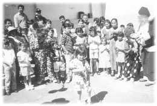
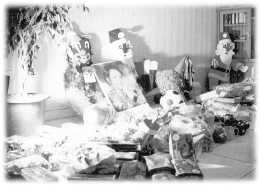

| Un phare dans l'obscurité |
|  |
Célébration de Noël avec les enfants des détenus de la prison d'Heredia, Costa Rica. |
Les amis pratiquants du centre de Costa Rica, le personnel administratif de la prison d'Heredia et le Rotary Club de Heredia se sont associés pour organiser la célébration des fêtes de Noël pour 300 enfants et leurs parents. Certains pratiquants se sont déguisés en Père Noël, d'autres ont joué le rôle de quatre clowns joyeux. Quatre pinatas géantes en forme de pots, destinées à être brisées par les enfants, ont été remplies de friandises.
|  |
Cadeaux pour les enfants |
Des sacs de friandises, de biscuits, de boissons et de cadeaux ont été préparés pour tous les enfants. Nous avons chanté avec un orchestre et cela a égayé l'atmosphère et la cour centrale de la prison ressemblait à une grande foire, rempli d'harmonie. On pouvait lire un immense bonheur sur les visages des enfants. C'était un jour magnifique plein d'abondance, organisé grâce à des dons et à l'aide généreuse de tous les participants.
(Initialement en espagnol). | Lettre de remerciements adressée par le Centro Atencion Institucional à Heredia, Costa Rica à l'Association Internationale du Maître Suprême Ching Hai pour avoir organisé les fêtes de Noël pour les détenus et leurs familles. |